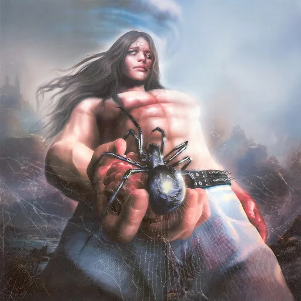

Spiderr is the eighth studio album by Swedish musician Bladee. It was released on 30 September 2022 via Year0001. The album was announced via Bladee's Instagram on 15 September 2022 and along with the announcement, a song and accompanying video directed by Ecco2K "Drain Story" was shared. Spiderr follows Bladee's and Ecco2K's 2022 collaborative album Crest.
1. "Understatement" Whitearmor 3:08
2. "Its OK to Not Be OK" Whitearmor 1:17
3. "I Am Slowly but Surely Losing Hope" Whitearmor 2:33
4. "Icarus 3reestyle" Whitearmor 2:06
5. "Nothingg" (featuring Wondha Mountain) (Reichwald, Rosenberg & Odmunkh Natsagdorj) Whitearmor 3:06
6. "Blue Crush Angel" Whitearmor 3:14
7. "Disaster Prelude" (featuring Ecco2k) (Reichwald, Rosenberg, Carl Berlander & Zak Arogundade) Whitearmor, Gud 1:57
8. "Hahah" Whitearmor 2:16
9. "Drain Story" Whitearmor 1:50
10. "Velociraptor" Whitearmor 2:18
11. "Dresden ER" Whitearmor 2:55
12. "She's Always Dancing" (Reichswald, Rosenberg & Joakim Benon) Whitearmor, Joakim Benon 1:48
13. "Uriel Outro" Whitearmor 2:51
Total length: 31:19